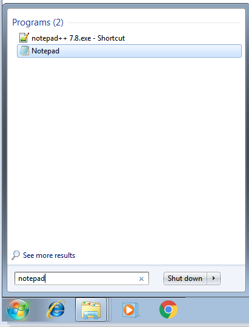

[TOC]
௧. புதிய அகராதி உருவாக்கும் முறை
ஒருவேளை புதிய அகராதிகளை இந்தப் பட்டியலில் சேர்க்கும் திட்டம் ஒரு சிலருக்குத் தோன்றலாம். ஆகவே இந்தக் கட்டுரையை உருவாக்குகிறேன்.
- தங்களிடம் ஏதேனும் சொற் தொகுப்பு இருக்கலாம் அவற்றை மக்கள் அனைவரும் பயன்படுத்த வேண்டும் என்றால் அவற்றை மக்களின் கைகளில் கொண்டு சேர்க்க வேண்டும். தற்போது அனைவரின் கைகளும் இருக்கும் பொருள் கைபேசி, முக்கியமாக Android போன் உள்ளது.
- அதற்காகவே அகராதிகளை கைபேசியக்கம் பணியை கடந்த சில வருடங்களாக செய்து வருகிறோம். அனைத்து அகராதிகளையும் கைபேசியக்கம் செய்வதன் மூலம் அனைத்து இடங்களிலும் தமிழ் எனும் நோக்கை விரைவில் அடைந்திட முடியும்.
அனுப்பும் மின்னஞ்சல் முகவரி
ஒருவரிடம் சொற் தொகுப்பு உள்ளது அதனை கைபேசியாக்கம் செய்ய விழைகிறார் என்றால், அந்தச் சொற் தொகுப்பை வெள்ளுறை (PlainText, CSV) வடிவில் pitchaimbox-tic@yahoo.com எனும் முகவரிக்கு அனுப்பலாம்.
- மின்னசல் தவிர வேறு எந்த வழியில் அனுப்பலாம்.
- கூகிள் டிரைவ் மூலமாகவோ
- Github.com மூலமாகவோ பகிரலாம். நான் தாங்கள் Github.comல் ஒரு புதிய இலவச Account உருவாக்கி ஒரு புதிய repo மூலம் பகிர்வதை வரவேற்கிறேன். இதன் மூலம் இதுவரை https://github.com/ThaniThamizhAkarathiKalanjiyam/ உருவாக்கி வைத்துள்ள அகராதிகளை தங்களும் ஒரு நகல் எளிதாக எடுத்துக் கொள்ள முடியும்.
௧.அ. வெள்ளுறை வடிவை எந்த மென்பொருளில் செய்யலாம்
அனைவருக்கும் தெரிந்த ஒரு மென்பொருள்
- Windows இயங்குதளம் என்றால் Notepad அல்லது Notepad++ பயன்படுத்தலாம்.
- Linux இயங்குதளம் என்றால் gedit போன்ற மென்பொருள பயன்படுத்தலாம்.
௧.௨.௧ சொற்தொகுப்பு எந்த வடிவில் தரலாம்
கடந்த வருடங்களில் அகராதி தொகுப்பை கைகொண்டதன் விளைவாக MarkDown (.md) format எளிதாக உள்ளது. அந்த வடிவம் சொல் - பொருள் என இருந்தால் நலம்.
##சொல்1
- சொல்1பொருள் 1
- சொல்1பொருள் 2
- சொல்1பொருள் 3
##சொல்2
- சொல்2பொருள் 1
- சொல்2பொருள் 2
- சொல்2பொருள் 3௧.௨.௨. Excel format-ல் முன்னமே சொற்தொகுப்பு உள்ளது என்றால்?
ஒருவேளை முன்னமே Excel format-ல் தங்களிடம் இருந்தால், அதனை மேற்கண்ட மின்னஞ்சல் முகவரிக்கு அனுப்பலாம். மேலே உள்ள நடை முறைகளை நான் செய்து விடுவேன்.
௨. புதிய சொற் தொகுப்பு உருவாக்கும் முறை
இங்கு விண்டோஸ் இயங்குதளத்தில் எவ்வாறு உருவாக்குவது என கூறுகிறேன். முதலில் தமிழில் உள்ளிட்டுக் கருவியை நிறுவிக்கு கொள்ளுங்கள்.
- உதாரணமாக நான் கூகிள் உள்ளிட்டுக் கருவியை நிறுவிக்கொள்ளுங்கள். எப்படி இந்தக் கருவியை நிறுவுவது என இங்கு உள்ளது.
- இணைப்பு இதோ https://thanithamizhakarathikalanjiyam.github.io/google_input_tools
- பின்னர் Notepad அல்லது Notepad++ திறக்கவும்
- 
- மேலே கூறுயுள்ள வடிவில் கோப்பை உருவாக்கவும்.

- பின்னர் சேமிக்கவும் File > Save; முக்கியமாக சேமிக்கும் முறை UTF8 என்பதை தேர்ந்தெடுக்கவும்.

- அவ்வாறு சேமித்த கோப்பை மேற்கண்ட மின்னஞ்சல் முகவரிக்கு அனுப்பவும்.

இப்படிக்கு,
- பிச்சைமுத்து மு.